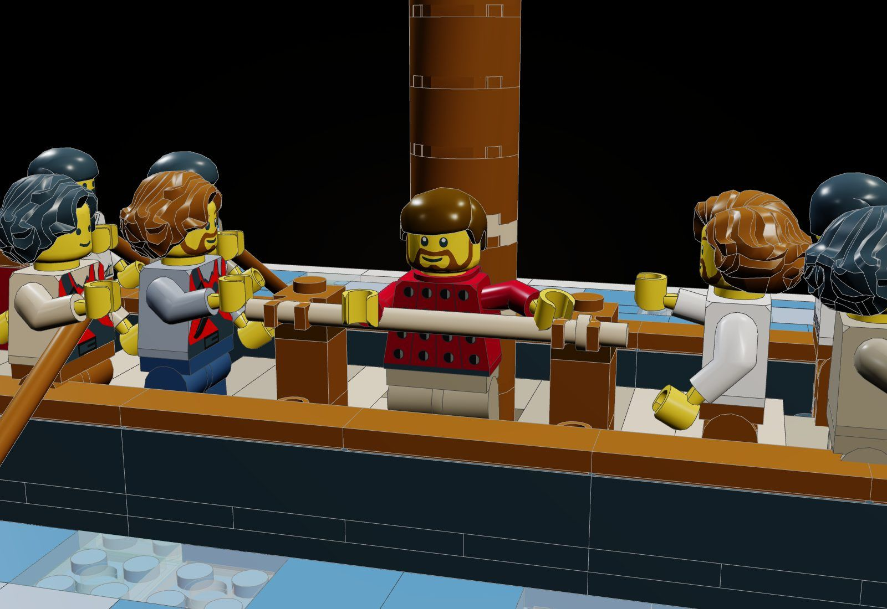
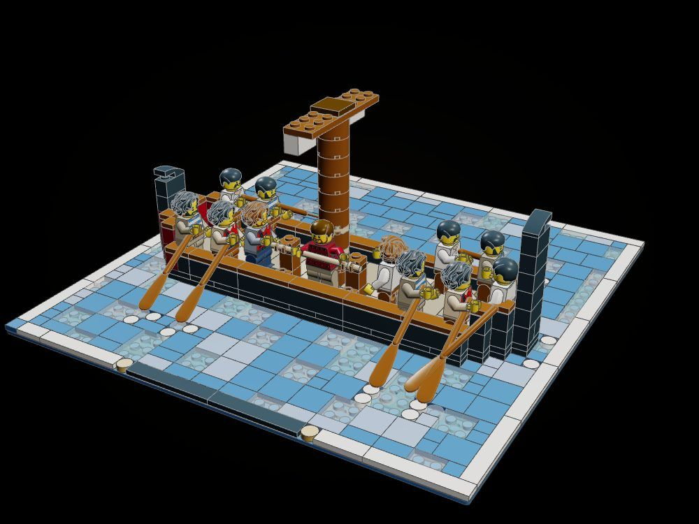
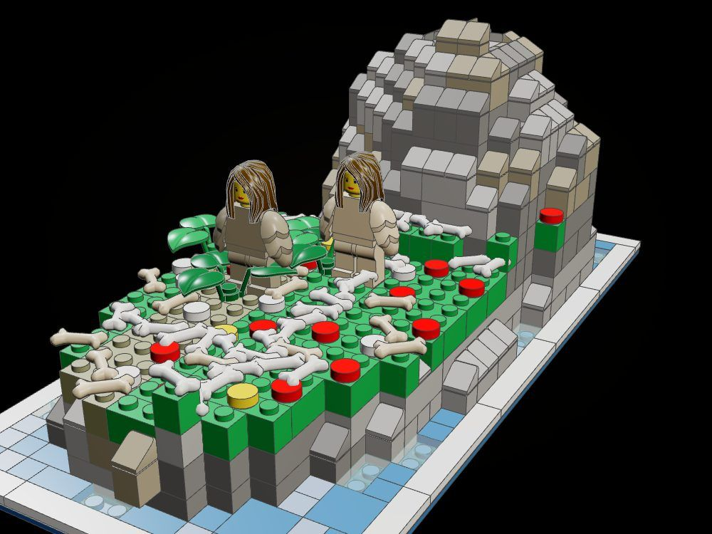
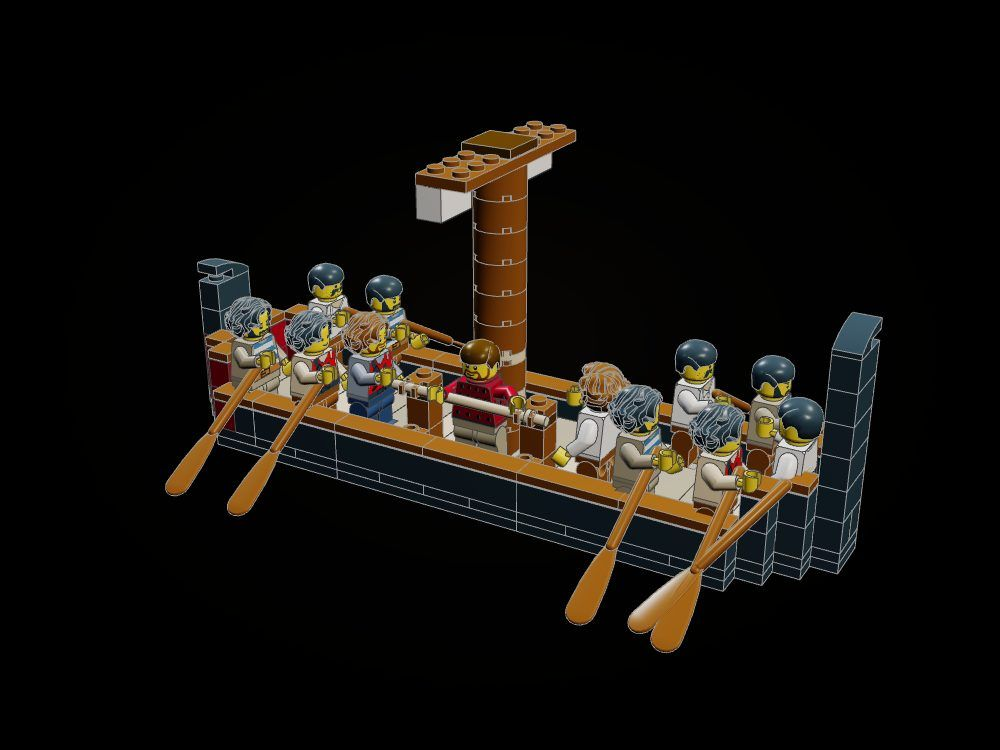

The Odyssey Line · Medium · Book XII · 1,420 pieces
The Sirens
The wind has died; the black ship rows past the Sirens' island, the crew's ears stopped with wax, Odysseus bound upright at the mast and straining at the ropes while the two Sirens sing in their meadow heaped with bones.
"Come hither on thy way, renowned Odysseus, great glory of the Achaeans; stay thy ship that thou mayest listen to the voice of us two." (Odyssey XII, tr. A. T. Murray)

The object
The mast: a column of round bricks with the lashing band wound round it in tan, and at its foot the place where he is bound, two posts with a clip at the ankle and at the chest and a rope-bar across him in each pair.

How it is built
- The galley is brick-built: a doubled keel of black plates laid crosswise, a side course of black bricks with vermilion cheeks at the bow, ends that sweep up a course to the stem and the stern post, a timber gunwale in tiles.
- The mast is round bricks stepped on the floor, with tan round plates wound into it as the lashing band and the furled sail hung under the yard.
- Odysseus is bound between two posts: a clip-brick at his ankles, a clip-plate at his chest, and a rope-bar across him in each pair of clips.
- Eight rowers at the oars face aft; Eurylochus and Perimedes stand by the ropes; a lump of beeswax lies on the floor by the mast.
- The ship stands afloat on its own 32 x 32 base of sea tiles with its nameplate; white round tiles mark the splash of the blades and the wake.
- The Sirens' rock is sculpted: a grey crag, a meadow shelf with its studs kept for flowers, bones lying in the grass, and two Sirens with bird-wing arms.
The builds inside the build

The ship and the bound man
The galley afloat on its own base of sea, framed and named; displays alone.

The Sirens' rock
The crag, the meadow of flowers and bones, the two Sirens, on 16 x 32.

The galley alone
Lifted off the sea: every part of the hull and the mast checked to click without the sea to hold it.
What the checker says
| Build | File | Pieces | Loose | Clashes |
|---|---|---|---|---|
| The ship passing the Sirens' rock | set.sirens | 1,420 | 0 | 0 |
| The ship and the bound man, on its own base of sea | set.sirens-ship | 630 | 0 | 0 |
| The Sirens' rock | set.sirens-rock | 790 | 0 | 0 |
| The galley alone, off its base | set.sirens-galley | 292 | 0 | 0 |
In the film

Still to do
- The donor galley (kit-galley.json) was not used: its unitary hull has only a few deck studs, so the brick hull was built instead so that the mast step and the posts click.
- The rope-bars, the clips that hold them, the oars and the figures are placed by hand; the click checker does not see parts off the grid or at an angle.
- The wax in the crew's ears cannot be shown at minifigure scale; only the lump of beeswax on the floor tells it.
- Two of the near-side oars cross each other from some angles.